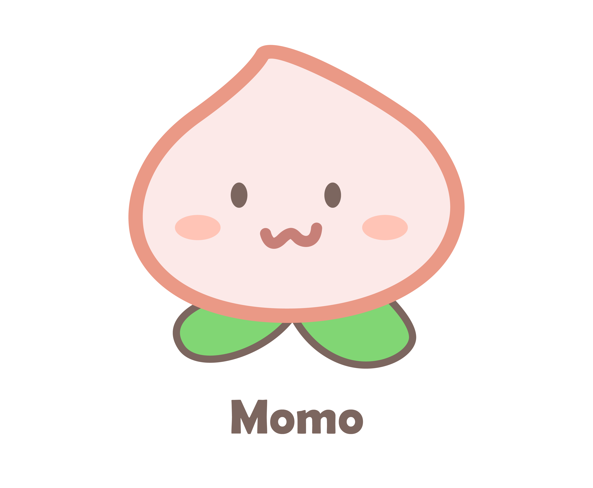
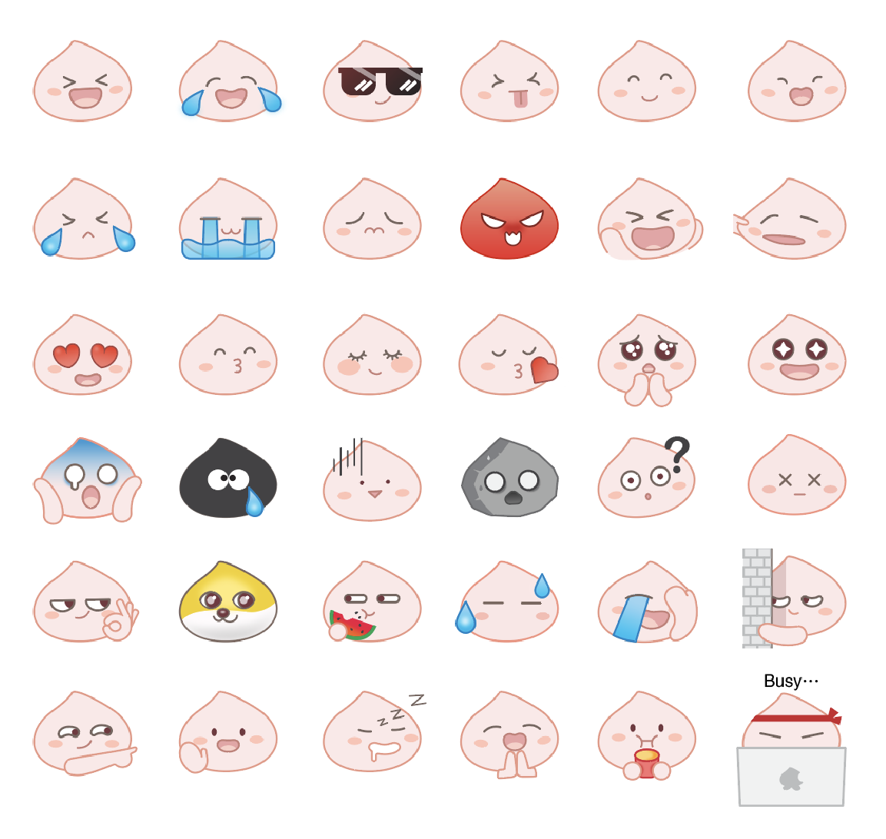

Momoisland is an e-commerce platform focused on selling Asian products to a primarily female audience aged 18–35. I joined as the sole designer with one brief: rebuild the entire app from scratch, in six weeks, for launch.
Momoisland is an e-commerce platform focused on selling Asian products to a primarily female audience aged 18–35. I joined as the sole designer with one brief: rebuild the entire app from scratch, in six weeks, for launch.


I referenced Taobao and Amazon — not for visual inspiration, but for how they structure navigation and checkout flows. Both platforms have been tested at massive scale. Borrowing their logic gave me a solid foundation to work from without needing to validate from scratch.